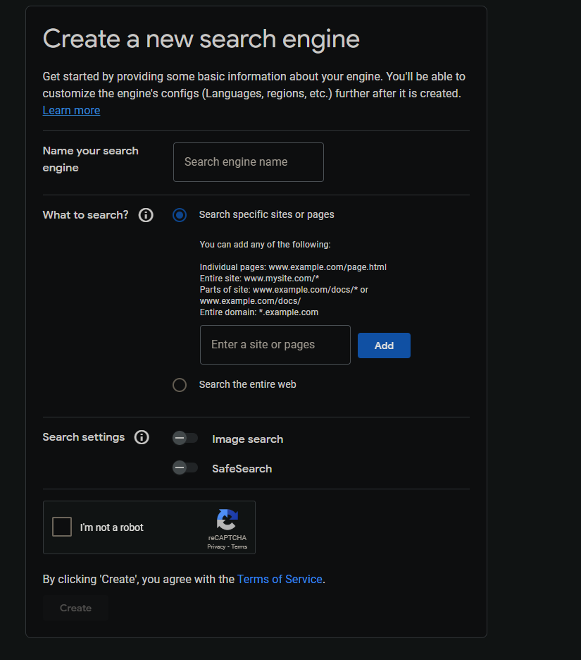

Part 1: Get Your API Key 🗝️
An API Key allows the LookStuffUp extension to make search requests to Google on your behalf. It's your personal key to unlock Google's search power within the extension.
- First, you need a Google Cloud project. If you don't have one, don't worry! Google will help you create one. Go to the Custom Search API page.
- The page will prompt you to select or create a project. Once your project is ready, you'll see a big blue "Enable" button. Click it.
- After a moment, the page will refresh. Now, look for the "Credentials" tab on the left-hand menu and click it.
- At the top of the credentials page, click the "+ CREATE CREDENTIALS" button and choose "API key" from the dropdown list.
- A window will pop up showing your new API key. This is it! Click the copy icon next to the key, and then paste it into the "API Key" field in the LookStuffUp extension's options.
Keep it Secret, Keep it Safe! Your API key is sensitive. Don't share it publicly. It's a good idea to "Restrict" your key later on from the same Credentials page to prevent others from using it.
Part 2: Create Your Search Engine & Get its ID 🔎
Next, you need a Search Engine ID. This tells LookStuffUp *what* websites you want the results to come from. You can create a search engine that looks through the whole web, or one that only searches specific websites you choose.
- Go to the Programmable Search Engine page and click the blue "Add" button.
-
You'll see a form like the one in the image. Let's fill it out:

- Name your search engine: Give it a simple name you'll remember, like "My Web Search" or "Recipe Site Search."
- What to search?: This is the most important setting.
- To search the entire web (like a normal Google search), choose the "Search the entire web" option. This is the easiest choice to start with.
- To search only specific websites, enter a web address (like `www.wikipedia.org`) in the box and click "Add". You can add multiple sites. - Settings: You can turn on "Image search" if you want to find pictures, and it's a good idea to leave "SafeSearch" on to filter explicit results.
- Security Check: Tick the box that says "I'm not a robot."
- Once the form is filled out, click the blue "Create" button at the bottom.
- Success! You'll be taken to a new page. In the "Basic Information" section, look for your "Search engine ID".
- This ID is a long string of letters and numbers. Click the "Copy to clipboard" button to copy it, and paste it into the "Search Engine ID" field in the LookStuffUp extension's options. This ID is also known as your `cx` number.